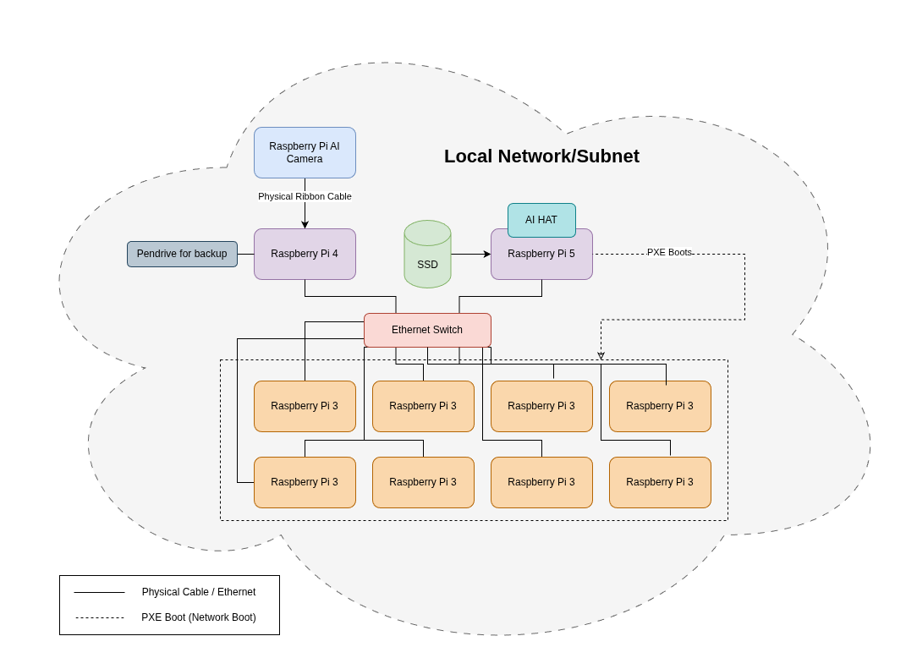
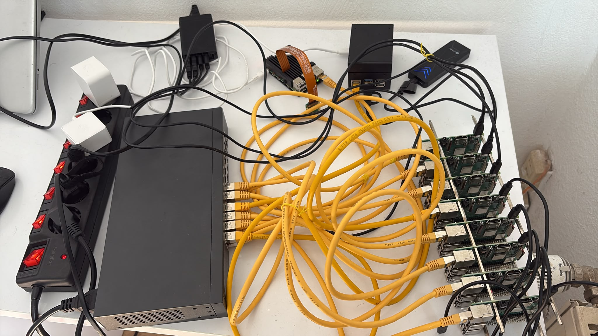
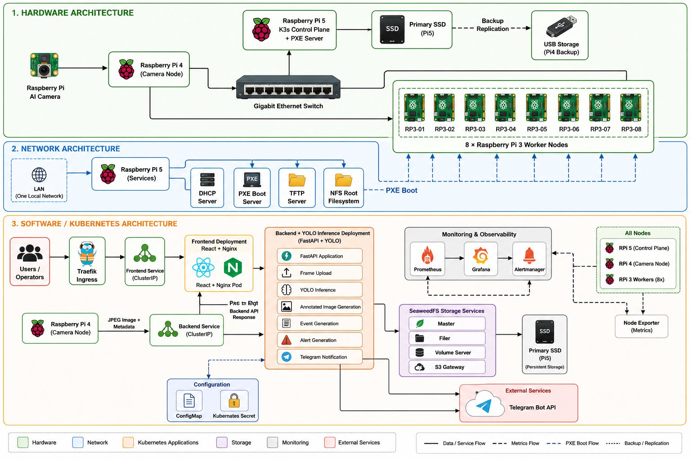

System Architecture - A Holistic Overview
The system combines edge image acquisition, Kubernetes orchestration, distributed storage, and monitoring to perform real-time object detection while minimizing network bandwidth usage.
The architecture is organized into three layers:
- Hardware Architecture
- Network Architecture
- Software Architecture
Hardware Architecture

The cluster consists of eleven Raspberry Pi devices connected through a dedicated Gigabit Ethernet network.
| Device | Quantity | Operating System | CPU Architecture | Purpose |
|---|---|---|---|---|
| Raspberry Pi 5 | 1 | Raspberry Pi OS (64-bit) | AArch64 | Kubernetes control plane, application host, PXE boot server |
| Raspberry Pi 4 | 1 | Raspberry Pi OS (64-bit) | AArch64 | Camera node and edge image acquisition |
| Raspberry Pi 3 Model B | 8 | Raspberry Pi OS (64-bit) | AArch64 | Kubernetes worker nodes and distributed computing |
| Raspberry Pi AI Camera | 1 | — | — | Image capture |
In addition to the devices above, following are also an important part of the architecture:
| Device | Quantity | Storage | Size | Purpose |
|---|---|---|---|---|
| SSD | 1 | Yes | 500GB | Main storage device |
| Pendrive | 1 | Yes | 128GB | Backup Device |
| AI Hat | 1 | No | - | Additional AI Power |
The Raspberry Pi 5 is connected to an external SSD that serves as the primary persistent storage for the Kubernetes cluster. A USB flash drive attached to the Raspberry Pi 4 is used for backup replication.
This is our hardware setup:

Hardware Responsibilities
Raspberry Pi 5
The Raspberry Pi 5 is the central server of the cluster and performs multiple infrastructure roles.
It hosts:
- K3s Kubernetes Control Plane
- PXE Boot Server
- DHCP Server
- TFTP Server
- NFS Server
The Pi5 also exports the shared root filesystem used by all Raspberry Pi 3 worker nodes during network boot.
Raspberry Pi 4
The Raspberry Pi 4 acts as the edge sensing device.
It is connected directly to the Raspberry Pi AI Camera using the CSI interface and is responsible for
- capturing camera frames
- preprocessing images
- sending JPEG images and metadata to the backend service
- storing backup replicas on attached USB storage
The Pi4 does not perform AI inference. Instead, it forwards captured images to the backend running inside Kubernetes.
Raspberry Pi 3 Worker Nodes
Eight Raspberry Pi 3 devices form the Kubernetes worker layer.
Each worker node runs
- Raspberry Pi OS (64-bit)
- K3s Agent
- Node Exporter
- MPI/HPL benchmark software
- Task Distributor workers
These nodes are diskless and boot entirely over the network using PXE.
Network Architecture
All Raspberry Pi devices are connected through a dedicated Gigabit Ethernet switch, forming a private local area network.
The Raspberry Pi 5 has a static IP address and provides all boot services required by the worker nodes.
Network services include
- DHCP
- PXE Boot
- TFTP
- NFS
Internet
|
WiFi Connection
|
+-------------+-------------+
| |
Raspberry Pi 5 Raspberry Pi 4
(SD Card Boot - Boot Server) (SD Card Boot)
|
|
|
Gigabit Ethernet Switch
|
+----------+----------+----------+----------+
| | | | |
RP3-01 RP3-02 RP3-03 ... RP3-08
Worker Worker Worker Worker
(PXE Boot) (PXE Boot)(PXE Boot) (PXE Boot)
PXE Boot Process
The Raspberry Pi 3 worker nodes boot without local storage.
The boot sequence is:
- Worker powers on.
- DHCP request is sent to the Raspberry Pi 5.
- Raspberry Pi 5 assigns an IP address.
- TFTP downloads the boot files.
- Linux kernel starts.
- Root filesystem is mounted from the Pi5 through NFS.
- K3s Agent starts automatically.
- Worker joins the Kubernetes cluster.
This allows centralized operating system management and eliminates SD card maintenance across the worker nodes.
Software Architecture
The software stack is deployed on a K3s Kubernetes cluster.
The Raspberry Pi 5 hosts both the Kubernetes control plane and the application workloads.
The Raspberry Pi 3 devices provide additional compute resources for distributed workloads.
The software architecture consists of
- Frontend
- Backend
- Storage
- Monitoring
- Configuration Management
Frontend
The frontend is deployed as a Kubernetes Deployment containing a React application served through Nginx.
Users access the dashboard through Traefik Ingress.
The dashboard provides
- Recent detections
- Annotated images
- Event history
- Alert status
- Storage information
- Cluster monitoring
- System health
Backend
The backend is implemented using FastAPI.
Its responsibilities include
- receiving uploaded frames
- running YOLO inference
- generating annotated images
- creating detection events
- generating alerts
- storing images
- sending Telegram notifications
- serving REST APIs to the frontend
Only lightweight event information is transmitted to users instead of continuous video streams.
Storage
Persistent data is managed using SeaweedFS.
The storage layer contains
- SeaweedFS Master
- SeaweedFS Filer
- SeaweedFS Volume Server
- SeaweedFS S3 Gateway
Persistent volumes are stored on the external SSD connected to the Raspberry Pi 5.
Critical data is periodically replicated to external USB storage attached to the Raspberry Pi 4.
Monitoring
Cluster monitoring is implemented using Prometheus and Grafana.
Every Raspberry Pi runs Node Exporter, exposing metrics such as
- CPU utilization
- Memory usage
- Temperature
- Network traffic
- Disk usage
Prometheus periodically scrapes these metrics.
Grafana visualizes system performance through dashboards.
Alertmanager generates infrastructure alerts when predefined thresholds are exceeded.
Configuration Management
Application configuration is managed through Kubernetes resources.
Configuration includes
- ConfigMaps
- Kubernetes Secrets
This separates configuration data from application code while allowing secure management of sensitive information.
The Complete Story
After combining all above, we get the complete system architecture of PiWatch.
